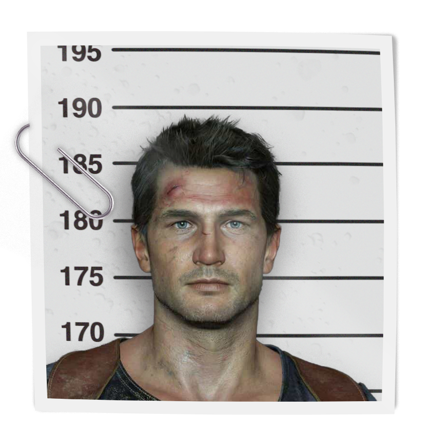
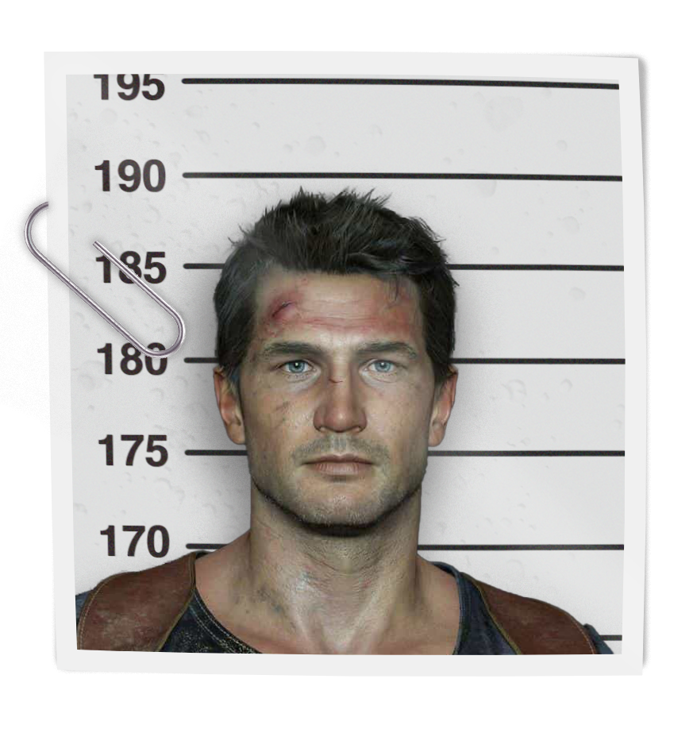
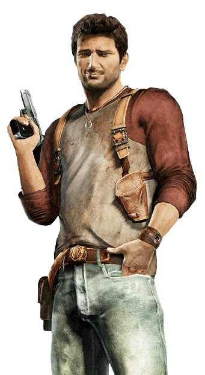
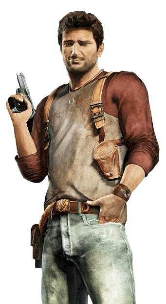

1988
Nathan Drake
Twelve years old
Orphanage

The Saint Francis Boys' Home, located in Boston, Massachusetts, was the orphanage in which Sam and Nathan Drake were left following their mother's suicide. Nathan Drake was placed in the orphanage aged five after his father surrendered him to thıe state. Sam left the orphanage when he was old enough to find a job to provide for the two. As he grew up, young Nate developed a fascination with British explorer and privateer Sir Francis Drake.
Read more
 


 
